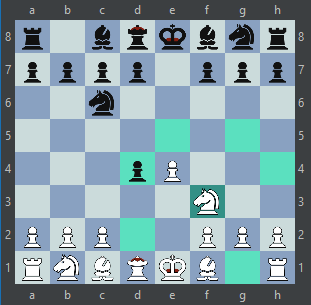
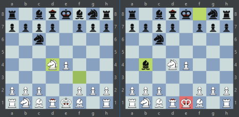
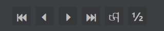

Lépés, a sakktábla kezelése
A sakktáblát, és az eszköztárat használva léphet az aktuális partipan, léptetheti a játékállást, feladhatja a játszmát, vagy döntetlent igényelhet.
Lépés a sakktáblán
Ha emberi játékoson van a sor, hogy lépjen, a sakktáblára kattintva kiválaszthatóak az egyes figurák. Ekkor a figura alatt lévő mező elszíneződik. Ezzel egy időben azok a mezők is színt váltanak amelyekre ennek a figurának van legális lépése.
Ez után az egyik kijelölt mezőre kattintva választhatja ki, melyik lépést szeretné megtenni. Miután ezt megtette, a választott lépés kezdő és cél mezőinek színe változik meg (bal oldalt). Ez mindíg a legutolsó lépést jelöli. Ha a lépés sakk, vagy matt állást eredményezett, a király mezője is elszineződik (jobb oldalt).
Eszköztár használata
Az eszközök ikonjai, és funkcióik:
- ⏮ : A játszma kezdőállásának megtekintése.
- ⏴ : Előző állás megtekintése
- ⏵ : Következő állás megtekintése
- ⏭ : Ugrás a játszma aktuális állásához
- 🏳 : Parti feladása
- ½ : Döntetlen igénylése - csak akkor aktív, ha arra a FIDE szabályok alapján joga van